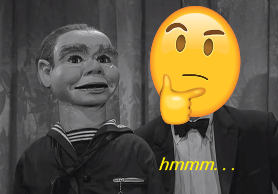

Least Favorite Episode
August 18, 2018 by  Douglas Hawkes
Douglas Hawkes
I know it might seem a little out of the normal to write a post on my least favorite episode of one of my favorite tv series' but being that it's one of my favorite series' I feel that it needs to be addressed. I'm not going to rip into the episode that much and I won't go over every part of it, I'll just go over a few sections that were lacking to say the least.
"The Last Night of A Jockey"
If anyone hasn't seen this episode, then you're honestly not missing out on anything being that this is not one of the more spectacular episodes you will get from the writing of Rod Serling unfortunately. I just wonder if he even enjoyed this episode at all himself, I know it was in the 5th season and ideas were getting harder to come up with for Serling but if this was the final draft he could come up with, I would've let Richard Matheson or Charles Beaumont takeover this episode.
I like the idea of using Mickey Rooney in the episode because he was a great actor, but not the idea of using his size just to make him a horse jockey, a crooked one at that. Basically, he's a horse jockey that was banned for life for using illegal performance enhancing drugs on his horse. He is the ONLY actor in this whole episode and we only see his apartment for the whole episode as well.
Lacking Parts
Another voice chimes in as he is indulging in his alcohol and claims to be his "alter ego". After arguing with his "alter ego" for a while the voice finally gives the ex-jockey an opportunity to set things right by granting him a wish. This plot is very dull and unimaginative from Serling and also feels like this has been done before in earlier seasons to a certain extent. What also makes this episode unimpressive is the lack of different scenery. If there was just one scene that wasn't set in the apartment or one more actor in the story, I feel like it would have made the episode a tad more interesting.
After arguing with his "alter ego" for a while the voice finally gives the ex-jockey an opportunity to set things right by granting him a wish. This plot is very dull and unimaginative from Serling and also feels like this has been done before in earlier seasons to a certain extent. What also makes this episode unimpressive is the lack of different scenery. If there was just one scene that wasn't set in the apartment or one more actor in the story, I feel like it would have made the episode a tad more interesting.

Then the ex-jockey wishes to be big out of all personal desires in the world. He takes a nap and wakes up to find himself standing over 7ft tall. Before you as the viewer can even begin to clown him for that wish, the "alter ego" does it for you in the most hilarious fashion, basically saying that he comes really cheap. This is my favorite part of the episode because the voice knows all about the ex-jockey's wrong doings and it's kind of like he is ripping on himself so hard.
You can feel the episode coming to an end and you are waiting for that big reveal at the end and it's almost there. The man receives a call from the racing commission and is informed that he has been reinstated but realizes that he has been growing and growing and now cannot even race or let alone fit on a horse anymore. He becomes enraged and because he can now barely fit in his apartment, he starts wrecking it and that is how the episode ends. Remember that big reveal you were waiting for? Well it's a disappointment because there is none.
Conclusion
This is definitely my least favorite episode for those reasons above and more. I read that Serling wrote this episode specifically for Mickey Rooney but I don't know exactly why, I mean I like him as an actor but he could've played a less annoying role with a more captivating plot. Its just like "Nervous Man in A Four Dollar Room" where the actor sits in one room for a 30 minutes of the episode and that's the main part that made this episode the least favorite. I did the least favorite post to let it be known that there are several less favored episodes but that doesn't make them exactly bad episodes. Even in Serling's worst written episodes in my opinion, there are still underlying gems to be found and understood which is amazing. This one definitely makes the least favored but it's not neccessarily a bad episode in all and I can honestly say I love different aspects about different espisodes.
Thank you fans for visiting this post, I really appreciate your feedback as well in the comments. Let me know what other posts you all might want to see.